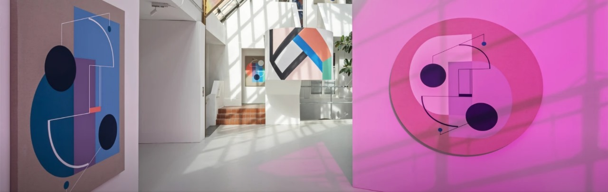

SENIMAN SINTA TANTRA
created by Evita Lutfiani

Sinta Tantra adalah Seorang seniman Inggris keturunan Bali
, Sinta Tantra menghabiskan masa kecilnya di Indonesia, Amerika dan Inggris di mana ia belajar di Slade School of Fine Art dan Royal Academy Schools. Dikenal dengan lukisan geometris warna-warni dan mural khusus lokasi, banyak di antaranya berada di ranah publik, karya Tantra mengeksplorasi 'lukisan dalam skala arsitektur'. Penerima pertama Bridget Riley Drawing Fellowship di British School di Roma, komisi sebelumnya termasuk The Contemporary Art Society, Folkestone Triennial, Karaachi Biennale dan Canary Wharf London. Lukisan Tantra adalah bagian dari Koleksi Seni Pemerintah, koleksi Yayasan Benetton dan koleksi swasta internasional lainnya.
Seniman Sinta Tantra (lahir 1979) dikenal karena karya seni publik berskala besar yang penuh warna dan lukisan geometris. Tinggal dan bekerja di antara dua studionya di London dan Bali, karya seni Tantra menempati berbagai dimensi dan skala.
Lahir di New York dari orang tua Bali, Tantra dibesarkan di London dan belajar seni di Slade School of Fine Art (2003) dan di Royal Academy Schools (2006). Dalam karyanya, motif berasal dari gerakan Barat seperti Bauhaus, Art Deco, modernisme dan abstraksi. Identitas Bali dalam konteks pasca-kolonial adalah inti dari karyanya. Gambar-gambar karya seniman, arsitek, dan pemahat batu Bali abad ke-20 I Gusti Nyoman Lempad telah memberikan informasi eksplorasi terhadap garis dua dimensi dan ruang tiga dimensi.
Palet warna pop-tropisnya diambil dari budaya dan lingkungan Bali.
Seni lukis mural Sinta Tantra adalah anti-pola asimetris
yang merespons secara dekat lingkungan sekitar. Ia menggambarkannya sebagai “lukisan hidup yang tidak hanya ada dalam skala manusia – di mana tubuh dapat tenggelam dalam warna – tetapi juga dalam skala kota, di mana warna memecah blok arsitektur abu-abu kota.” terlihat di Al Majaz Waterfront di Sharjah (2019), Lee Tung Avenue di Hong Kong (2018), dan melintasi jembatan sepanjang 300 meter di Canary Wharf di London (2012).
PAMERAN SINTA TANTRA


SMALL IS BEAUTIFUL
FLOWERS GALLERY, LONDON 24 NOVEMBER 2022 - 7 JANUARY 2023

Karya terbaru Sinta Tantra Paradise I (Suwargan) dan Paradise iI (Suwargan) dipamerkan dalam pameran Small Is Beautiful edisi ke-40 Galeri Bunga di galeri Cork Street, London dan online.
Flowers pertama kali memperkenalkan Small Is Beautiful pada tahun 1974, mengundang sekelompok seniman kontemporer terpilih yang bekerja di berbagai media untuk menghasilkan karya dalam skala tetap tidak lebih dari 7 x 9 inci. Sejak awal, acara ini telah memberikan kesempatan langka untuk menampilkan karya-karya kecil dari nama-nama yang diakui secara internasional dan menemukan bakat-bakat baru.
ON THE NATURE OF BOTANICAL GARDENS
FRAMER FRAMED, AMSTERDAM 24 JANUARY - 16 AUGUST 2020

On the Nature of Botanical Gardens (2020) menampilkan sembilan seniman kontemporer Indonesia yang melihat secara kritis kebun raya, kekuasaan kolonial, pengembangan pengetahuan dan perekonomian alam, warisannya dan konsekuensi terkini dari pendekatan terhadap alam dan tumbuhan. Pameran ini berupaya mendekolonisasi konsep kebun raya dan perannya dalam membangun kerajaan kolonial Belanda di Indonesia.
A HOUSE IN BALI
LAFLO SHOWROOM, JAKARTA 9 - 24 NOVEMBER 2017

Pameran tunggal terbaru Sinta Tantra. Judul A House in Bali
diambil dari buku karya Colin McPhee, seorang komposer Kanada yang melakukan perjalanan ke Bali pada tahun 1920-an dan 1930-an.
Untuk selengkapnya, klik disini!
| Nama Lengkap | : | Evita Lutfiani |
| NIM | : | 11210251000105 |
| Jurusan/Kelas | : | Ilmu Perpustakaan/5A |